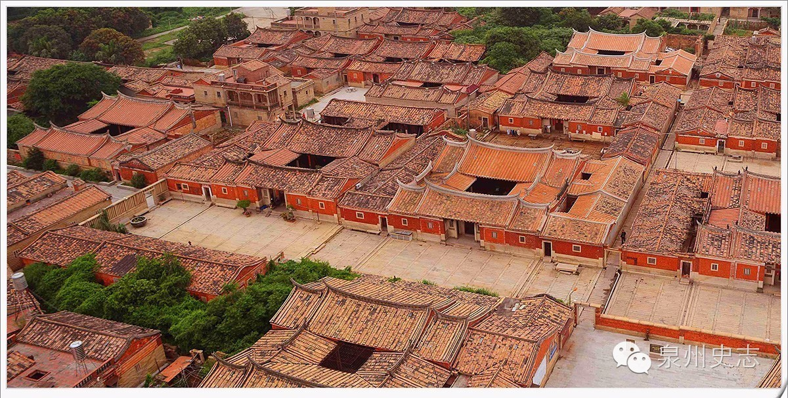

欢迎了解我们的风俗
风土人情
民俗
泉州素有“海滨邹鲁”、“光明之城”的美誉。
泉州，周为七闽地，历年来出土的西周礼乐器和原始壁画，反映了二三千年前泉州原住民古闽越族人的原始舞蹈风貌。唐朝中期以来，中原人南迁入泉；唐、五代时，不但城郊东湖常有游宴歌舞的记载，南安云台山下还建有常设性歌舞院馆。
宋、元时代，泉州成为“市井十洲人”的“富洲”、“乐州”。官府甚至不得不出榜喻民“莫贪浪游，莫看百戏”
。
泉州保留的戏曲文化遗产，有梨园戏、高甲戏、打城戏、“嘉礼”戏等剧种，其中较为出名的有：南音、北管、梨园戏和“提线木偶”。
方言
"通用语言为普通话，闽南话为主要地方方言，并存莆仙话、客家话等多种地方方言。泉州方言是泉州文化的主要载体，也是泉州历史文化遗产的一个重要组成部分，历史上的泉州方言曾是闽南方言代表。泉州当地的语言是闽南语。"
家乡风貌
古民居
泉州古建筑中最有地方特色的是泉州民居建筑，尤其是贵族、官僚、富豪、士大夫阶层中的文人、画家，他们的宅第规模可观，形式讲究，其造型、格局、技艺、用材等都蕴含着某个特定时代的文化气质。
千百年来，民风民俗的传承衍化，使泉州民居建筑自成一派天然风韵。有三开间或五开间红砖白石双坡曲燕尾脊的汉式古大厝，有“手巾寮”的纵向住宅，有骑楼式的商住合一的建筑，还有与山村环境十分协调的“吊脚楼”（木楼），他们就地取材，十分简朴，却独具风格。还有一种是外围护有高大坚固防御墙体，适应大家族集居特殊形式的土楼建筑中西合璧的住宅称“洋楼、番仔楼”。
代表地：蔡氏古民居、杨阿苗故居、黄宗汉故居、李光地故居、林路大厝等。
古寺庙
泉州有“泉南佛国”、“闽南蓬莱”之名。这些宗教既在泉州建造了大量宗教活动场所，还造就了许多著名的宗教人士和专家学者，不少高僧、高道受到朝廷的荣誉封号，许多著作成为珍贵的宗教典籍。同时，又留有大量胜迹、文物，成为重要的旅游资源和珍贵的学术研究资料。
代表地：开元寺、承天寺、清净寺、天后宫、草庵等。

家乡土特产品
| 类型 | 代表 |
|---|---|
| 特色主食 | 咸饭、萝卜饭、芥菜饭、花菜饭、卤肉饭，芋仔饭、壶仔饭、泉州炒饭、鱼仔粥、鸭仔粥、卤面、面线糊、湖头米粉、豆签、浮果、粉团、豆粽、甜粽、肉粽、番薯粉粿条、澳茄粿、酸菜鸡丝面、浮粿。 |
| 特色汤类 | 贡丸、鱼丸（深沪水丸）、元宵丸、永春白鸭汤、黑豆龙骨汤、苦菜大肠汤、马鲛羹、墨鱼羹、香菇豆猪舌汤、灌肠仔汤、石狮牛肉羹、藕段排骨汤、萝卜排骨汤、玉米排骨汤、水豆腐汤、七彩干贝汤、肉燕汤、猪血汤。 |
| 特色包子 | 水晶包、肉夹包、东方包、菜包、水煎包。 |
| 特色素菜 | 安溪水瓮菜、润饼菜、窖菜、德化淮山、凉拌苦瓜、辣油笋菜、蒜泥茄子、香油拌海带。 |
| 特色荤菜 | 洪濑鸡爪、崇武鱼卷、西街田螺、姜母鸭、鳗鱼干炖猪脚、焖猪肘、烘猪脚、牛排（有别于西餐牛排）、水门巷炖羊肉、猪血小肠、蚝（东石蚝）（浔埔蚝）、清蒸金枪鱼、文蛤蒸蛋、酱香花蛤、蒸油蛤、炒泥蚶、蒸苦螺、炒竹蛏、炒大头螺、沙鱼冻、芥菜炒虾皮、十香全鸭、香芋焖鸭。 |
| 特色甜品 | 石花膏、茜草粿（仙草密）、桔红糕、绿豆饼、粕丸、麻糍（麻吉）、榜舍龟、碗糕、花生汤、豆沙饼、石狮塘头甜粿、石狮芋圆、芋饼、芋蓉（芋泥）、土笋冻、柿饼、菜头酸、糖醋莲藕片、贡糖、椰子饼、雪拉膏、四果汤等。 |
家乡经济
2019年，泉州市实现地区生产总值（GDP）9946.66亿元，按可比价格计算，比上年增长8.0%，经济总量连续21年保持全省第一。其中，第一产业增加值218.61亿元，增长2.4%；第二产业增加值5855.27亿元，增长8.3%；第三产业增加值3872.78亿元，增长7.8%。第一、二、三产业对GDP增长的贡献率分别为0.7%、63.0%和36.3%，分别拉动GDP增长0.1个、5.0个和2.9个百分点。三次产业比例为2.2：58.9：38.9。按常住人口计算，人均地区生产总值114067元（按年平均汇率折合16535美元），比上年增长7.4%。
2019年，泉州市一般公共预算收入457.75亿元，比上年减收16.41亿元，下降3.5%，加上上划中央税收收入381.22亿元，全市一般公共预算总收入合计完成838.97亿元，比上年减收22.07亿元，下降2.6%。一般公共预算支出658.25亿元，比上年增长25.86亿元，增长4.1%。其中，教育支出150.91亿元，增长1.9%。政府性基金收入315.69亿元，政府性基金支出376.10亿元。税务部门组织各项收入956.30亿元，比上年增长2.3%，其中，税收收入756.88亿元，下降5.5%。海关代征税收收入125.04亿元，下降13.4%。
2019年，泉州市固定资产投资比上年增长6.3%。
2019年，泉州市居民人均可支配收入39155元，比上年增长8.5%；人均消费支出25447元，增长9.3%；人均住房建筑面积69.0平方米。按常住地分，全市城镇居民人均可支配收入49592元，增长7.5%，人均消费支出30754元，增长9.1%，人均住房建筑面积65.3平方米；农村居民人均可支配收入22142元，增长9.2%，人均消费支出16794元，增长8.3%。
家乡教育
历史名人
| 人物名称 | 生活年代 | 主要成就 |
|---|---|---|
| 欧阳詹 | 755-800年 | 国子监四门助教 |
| 俞大猷 | 1503-1580年 | 著名爱国将领 抗倭民族英雄 |
| 李贽 | 1624-1662年 | 杰出思想家和进步史学家 |
| 郑成功 | 1624-1662年 | 收复台湾 民族英雄 |
| 张文裕 | 1910-1992年 | 著名原子核物理学家 中国科学院学部委员 |
| 叶飞 | 1914-1999年 | 军事家、政治家 上将军衔 |
| 张高丽 | 1946年-今 | 曾任中央政治局常委/td> |
联系我
如果你想了解更多关于我家乡的事情，可以给我来信哦
下面这个表单会把信息发给我哦